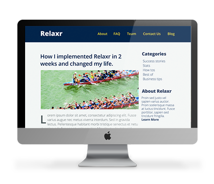
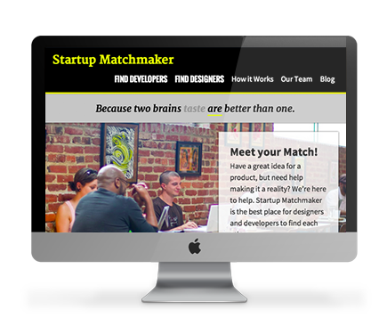
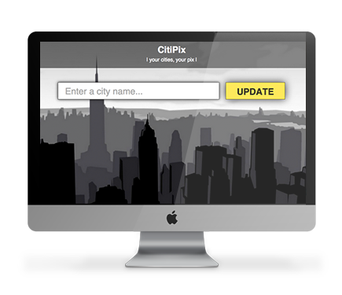

I recently graduated from a Front-End Web Development course at General Assembly where I learned HTML, CSS, JavaScript, jQuery and how to be an awesome Front-End Web Developer! During my spare time, I enjoy senior water aerobics, pickling, and spending time with my goldfish, Jerry.

Founded in 1996, Relax-R Corporation introduced 3-motion metal gliders across the United States in partnership with Myca Inc. and created a world class brand.
I developed a multi-column layout blog, landing page, and contact forms that render on mobile devices.
Click here to view the company website
Joining the largest community of more than 40,000 founders, advisers, and interns to help launch or grow groups of business.
I have used a design team's wireframes to develop this company's responsive homepage.
Click here to view the company website
CITIPIX is the interface between the four cities and the approximately 300 young photographers, who participated through a total of 35 workshops. It is an online image database, which gathers all images that has been produced in the workshops, and thus turns into a contemporary archive, which is freely accessible and can be playfully interacted with.
I built the web app prototype that allows users to store and quickly retrieve photos using keywords.
Click here to view the company website